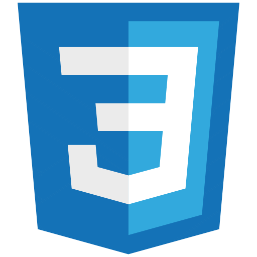
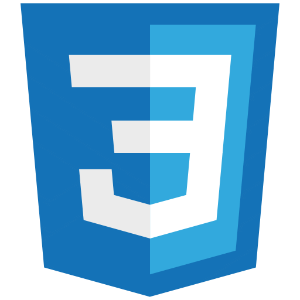

Hi, Noxolo here üë©‚Äçüíº
I'm
I am an entry-level React Developer with a passion for creating visually stunning and user-friendly websites.
About Me
I‚Äôm an aspiring web developer fresh out of Code Space, passionate about frontend development. Proficient in JavaScript, HTML, CSS, Tailwind CSS, React.js, Git, python and APIs, I thrive on creating seamless user experiences. With experience in content management systems, I‚Äôm ready to contribute my skills and learn even more. Let‚Äôs build something amazing together! üöÄ
Technologies
 



Projects
Tech stack used:
HTML
CSS
JavaScript
local storage
Git
Debugging tools
- In this project, we are tasked with tackling the provided user stories to both identify and fix bugs in the code, as well as to develop our own functions to extend the application's capabilities
- Key assignments include importing utility functions, initializing data, and diving into debugging tasks such as setting up data correctly in local storage, dynamically displaying boards and tasks, and enhancing user interactions.
- enhance the application by crafting code to meet specific functionalities outlined in the user stories, like managing task details and their lifecycle, toggling theme customization, and ensuring the persistence of data through local storage
Tech stack used
HTML
CSS
JavaScript
Git
DOM
- Created and used functions to dynamically populate the menu items on the page.
- Implemented a callback function to handle adding items to the order and changing price dynamically.
- Used closures to maintain the state of the order, Utilized function expressions and anonymous functions and called built-in functions and created custom functions to manage the menu and order system.
Technologies
HTML
CSS
Tailwind css
JavaScript
Git
- In this project, I created a landing page for cache bank focusing on responsive web design using html, css, tailwind css and some Javascript. This involved applying various tailwind css techniques to achieve responsive, visually appealing design that is compatible with different screen-sizes
- My approach was mobile first design and I achieved responsive design by using utility classes for media queries such as sm -for small screens to 2xl for desktop view.
- Used Javascript to add interactivity on the Navigation bar , this enables the user to be able to view or hide menu in mobile view.
Get in touch
Find Me
Email: wendyngcobo98@gmail.com
Tel: +27 649342683